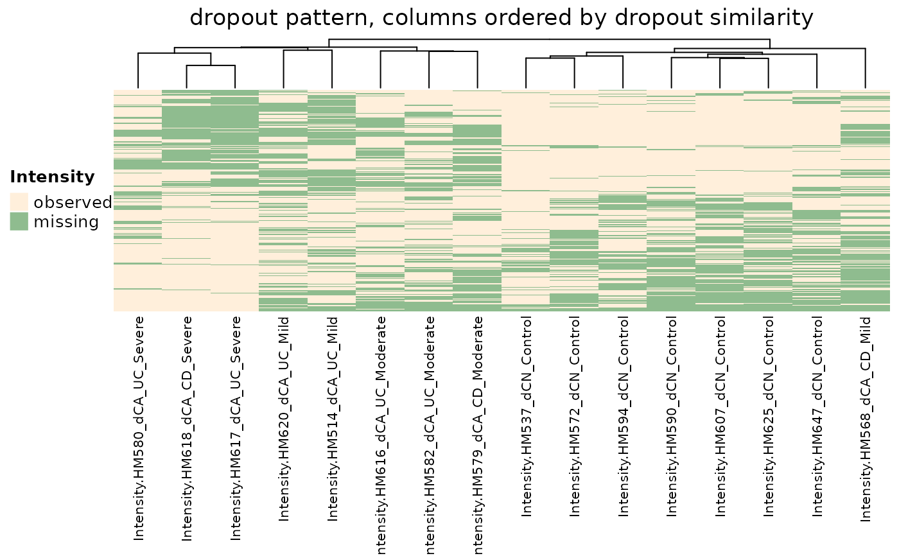

Two methods are provided to identify features (peptides or proteins) that can be informative of missing patterns.
Method hvp fits a linear model to peptide dropout rate (proportion of samples were peptide is missing)
against peptide abundance (average log2-intensity). Method emb is a information theoretic approach to
identify missing patterns. It quantifies the heterogeneity (entropy) of missing patterns per
biological (experimental group). This is the default method.
selectFeatures(
x,
method = c("ebm", "hvp"),
group,
n_features = 500,
suppress_plot = TRUE
)| x | Numeric matrix giving log-intensity where missing values are denoted by NA. Rows are peptides, columns are samples. |
|---|---|
| method | character. What method should be used to find features? options include |
| group | character or factor vector specifying biological (experimental) group e.g. control, treatment, WT, KO |
| n_features | Numeric, number of features with high dropout rate. 500 by default. Applicable if |
| suppress_plot | Logical show plot of dropouts vs abundances. Default to TRUE. Applicable if |
A data frame with a logical column denoting the selected features
In general, the presence of group-wise (structured) blocks of missing values,
where peptides are missing in one experimental group can indicate MNAR, whereas if
such patterns are absent (or missingness is uniform across the samples), peptides are likely MAR.
In the presence of MNAR, left-censored MNAR imputation methods should
be chosen. Two methods are provided to explore missing patterns: method=hvp identifies top n_features
peptides with high average expression that also have high dropout rate, defined as the proportion of samples where
peptide is missing. Peptides with high (potentially) biological dropouts are marked in the hvp column in the
output dataframe. This method does not use any information about experimental conditions (i.e. group).
Another approach to explore and quantify missing patterns is by looking at how homogeneous or heterogeneous
missing patterns are in each experimental group. This is done by computing entropy of distribution of observed values.
This is the default and recommended method for selectFeatures. Entropy is reported in EBM column
of the output. A NaN EBM indicates peptide is missing at least in one experimental group. Features set to
TRUE in msImpute_feature column are the features selected by the selected method. Users are encouraged
to use the EBM metric to find informative features, hence why the group argument is required.
Hediyeh-zadeh, S., Webb, A. I., & Davis, M. J. (2020). MSImpute: Imputation of label-free mass spectrometry peptides by low-rank approximation. bioRxiv.
msImpute
Soroor Hediyeh-zadeh
data(pxd007959)
group <- pxd007959$samples$group
y <- data.matrix(pxd007959$y)
y <- log2(y)
hdp <- selectFeatures(y, method="ebm", group = group)
# construct matrix M to capture missing entries
M <- ifelse(is.na(y),1,0)
M <- M[hdp$msImpute_feature,]
# plot a heatmap of missingness patterns for the selected peptides
require(ComplexHeatmap)
#> Loading required package: ComplexHeatmap
#> Loading required package: grid
#> ========================================
#> ComplexHeatmap version 2.9.0
#> Bioconductor page: http://bioconductor.org/packages/ComplexHeatmap/
#> Github page: https://github.com/jokergoo/ComplexHeatmap
#> Documentation: http://jokergoo.github.io/ComplexHeatmap-reference
#>
#> If you use it in published research, please cite:
#> Gu, Z. Complex heatmaps reveal patterns and correlations in multidimensional
#> genomic data. Bioinformatics 2016.
#>
#> The new InteractiveComplexHeatmap package can directly export static
#> complex heatmaps into an interactive Shiny app with zero effort. Have a try!
#>
#> This message can be suppressed by:
#> suppressPackageStartupMessages(library(ComplexHeatmap))
#> ========================================
hm <- Heatmap(M,
column_title = "dropout pattern, columns ordered by dropout similarity",
name = "Intensity",
col = c("#8FBC8F", "#FFEFDB"),
show_row_names = FALSE,
show_column_names = TRUE,
cluster_rows = TRUE,
cluster_columns = TRUE,
show_column_dend = TRUE,
show_row_dend = FALSE,
row_names_gp = gpar(fontsize = 7),
column_names_gp = gpar(fontsize = 8),
heatmap_legend_param = list(#direction = "horizontal",
heatmap_legend_side = "bottom",
labels = c("observed","missing"),
legend_width = unit(6, "cm")),
)
hm <- draw(hm, heatmap_legend_side = "left")
